(2007-03-13 09:00:49)
上堂课提到走势类型连接运算的结合性，也就是走势类型的连接符合结合律，即A+B+C =（A+B）+C =A+（B+C），【韶山映山红】结合律是指运算的顺序不影响结果。交换律是指算子的顺序不影响结果。结合律：(A+B)+C=A+(B+C)，(A×B)×C=A×(B×C)。交换律：A+B=B+A，A×B=B×A。】
A、B、C的走势类型级别可以不同。【韶山映山红】结合律不受级别的限制，可以跨级别做组合的运用。也就是说，每一段走势都可以拆零之后出现组合。】
因此，站在多义性的角度，根据该结合律，就不难知道，任何一段走势，都可以有很多不同的释义。【韶山映山红】释义，本义。任何一段走势，都有她的本义，一个完成的走势，她的级别、走势类型都是确定的，这是本义。为了分析的需要，做不同的排列组合，就会和本义不一致，产生新的释义。】
必须注意，多义性不是含糊性，一个含糊的理论，其分类、概念等呈现的含糊性，只是证明该理论基础的含糊。而多义性，是站在一个严格、精确的理论基础上，用同一理论的不同视角对同一现象进行分析。【韶山映山红】同一现象。同一理论。不同视角。多义性分析要站在严格、精确的理论基础上，符合走势类型完全分类的基本原理是基础。】
【韶山映山红】若禅精舍（陈秋明）：
这里开始涉及到稍微深层次一些的内容，而对于基础不太好的人，这里的内容是没有太大价值的。整部原文从简单到复杂，再到简单，期间穿插心态、生态、资金管理、大局观等其他方面内容，对于这里的结合性、同级别分解、多义性之类的，只是用来深化对理论理解程度的内容，对于非长期性降成本的操作，特别是短线而言，这些内容其实都没有太大价值。
走势的多义性，在理论定义、定理等精确表述下，同一段走势可能有不同解，这很正常。和数学题的多解其实差不多，与之不同的是对走势的多义性分解，其结果并不一定一致。而走势在理论框架下存在多义性，进一步说明了理论只是解读走势图的工具，并不能代替走势本身，这是很多人容易无意识混淆的事情。
】
一个最简单的释义角度，就是级别，任何一段走势，都可以根据不同的级别进行分解，不妨用An-m的形式表示根据n级别对A段进行分解的第m段，就有，【韶山映山红】把n级别作为最大级别，把A段分解成m段。】
A
=A1-1 + A1-2 + A1-3 + … + A1-m1
=A5-1 + A5-2 + A5-3 + … + A5-m5
=A30-1 + A30-2 + A30-3 + … + A30-m30
=A日-1 + A日-2 + A日-3 + … + A日-m日
等等，显然这些分解都符合本ID理论。【韶山映山红】如果不做同级别分解，“任何走势，都可以唯一地表示为a1A1+a5A5+a30A30的形式。”】
而根据某级别进行操作，站在纯理论的角度，无非等价于选择该等式列中某个子式子进行操作，这在上一课中已经有具体说明。【韶山映山红】为什么说“站在纯理论的角度”？实际操作的时候并不一定“等价于”？我觉得，即使是同级别分解，实际上也包含更低级别的走势混杂在一起，并不一定都能分解成首尾相连的同级别走势，所以这里说的是“站在纯理论的角度”。★可以做个专题，以后研究。】
【韶山映山红】这一段说的是多义性运用一：同级别分解的多义性运用。】
还有一种应用，就是关于走势的当下判断。
当下判断，其基础在于采取的分解方式。【韶山映山红】这个“分解方式”包括两方面，一是按不同级别的分解，二是不同走势片段的结合律组合。】例如，一个按5分钟分解的操作角度与一个按30分钟分解的操作角度，在同一时间看到的走势意义是不同的。【韶山映山红】处在不同的走势类型和不同的阶段中。】更重要的是，在5分钟分解中完成的走势，在30分钟却不一定完成。【韶山映山红】低级别完成、高级别未完成，要学会利用这两种分解组合的结果研判未来走势。】
例如A+B，A、B都是5分钟的走势类型，那么A+B走势，对于30分钟的分解就是未完成的。根据走势必须完美的原则，未完成的走势必完成，也就是，在不同的分解角度，可以在当下看到不同级别的未完成走势根据走势必完美原则产生的运动，这方面的仔细分析留待专门的课程。【韶山映山红】走势必完美，未完成走势如何完成，可以做完全分类，这些分类就是不测而测，就是在当下看到的未来。】
【韶山映山红】这一段说的是多义性运用二：做当下判断的多义性运用。利用不同级别的不同完成状态的互相参照，“根据走势必完美原则”做分析。实际上就是多级别联立的分析与运用。】
还有一种应用，就是把走势重新组合，使得走势更加清晰。【韶山映山红】我们平常所说的多义性一般都是说的这种多义性，也就是不根据走势类型划分去重新组合的多义性。】
很多人一看走势就晕，最主要是不了解走势连接的结合性，任何的走势，在结合律上，都可以重新组合，使得走势显示明显的规律性。【韶山映山红】重新组合的目的是使得走势显示明显的规律性，符合我们操作的某种模式。符合规则就行，不要去在意她是不是。】
假设A+B+C+D+E+F，A、C、E是5分钟级别的，B、D、F是30分钟级别的，其中还有延伸等复杂情况。【韶山映山红】相对原始的走势形态描述就是：a+B+c+D+e+F。延伸是说这6段走势的内部各自有自己的延伸，而不是简单的三三三划分之类的。延伸还是不延伸、哪一段延伸哪一段不延伸，这些组合问题使得走势分析更复杂了。】
这时候，就可以把这些走势按5分钟级别重新分解，【韶山映山红】“按5分钟级别重新分解”，不一定是完整的5分钟同级别分解。】然后按中枢的定义重新组合走势，按结合律的方法，把原来的分解变成A`+B`+C`+D`+E`+F`，使得A`、B`、C`、D`、E`都是标准的只是30分钟级别，【韶山映山红】不一定是完整的30分钟同级别分解。】而最后的F`变成在30分钟意义上未完成的走势，这样进行分析，就会很明晰了。【韶山映山红】低级别的走势是高级别组合的元素，所以先要分解整理成只有5分钟走势的划分，然后才能做30分钟级别的组合。重新组合原则是中枢的定义。重新组合的方法是结合律。重新组合的结果是只有30分钟的走势。“明晰”的意思是，最后一个是未完成的30分钟走势，就可以不测而测地指导当下做判断。】
当然，具体的组合有很多可能，如何根据当下的走势选择一种最有利指导操作的，就是考功夫的事情。【韶山映山红】在30分钟意义上未完成的走势F`不是唯一的，有很多可能的分解。哪些组合更有利指导操作？★可以做个专题，以后研究。】
【韶山映山红】这里有几个问题是缠师没有表达清楚的：１，多级别混杂的A+B+C+D+E+F重新组合之后，应该很难组合出同样数量并且一一对应的高级别的A`+B`+C`+D`+E`+F`。 ２，新组合的30分钟级别的走势，某些段是否和原来的走势一样，并没有受重新组合的影响。】
【韶山映山红】若禅精舍（陈秋明）：
根据当下的走势特点，去选择最利于分析与操作的分解方式。相当于同一道题目，有多种解题的方法，但其中有一种是最合适与简单的，这类情况相信只要读过高中的人都能有体会，而对于走势的分解，与对同一道数学题的最优解，道理其实是一样的。
】
而这种根据结合律的最佳组合，是根据市场当下的走势随时变化的，【韶山映山红】每一个次级别的演化，都可能带来本级别走势的不同划分，当下的走势划分就是要随时变化。】而所有的变化，都符合理论要求且不会影响实际操作，是对实际操作起着更有力的帮助。【韶山映山红】根据结合律的最佳组合，1，根据市场当下的走势随时变化。2，所有的变化都符合理论要求。3，所有的变化都不影响实际操作。4，所有的变化都对实际操作起着更有力的帮助。】
例如，在最近走势中，30分钟图上，
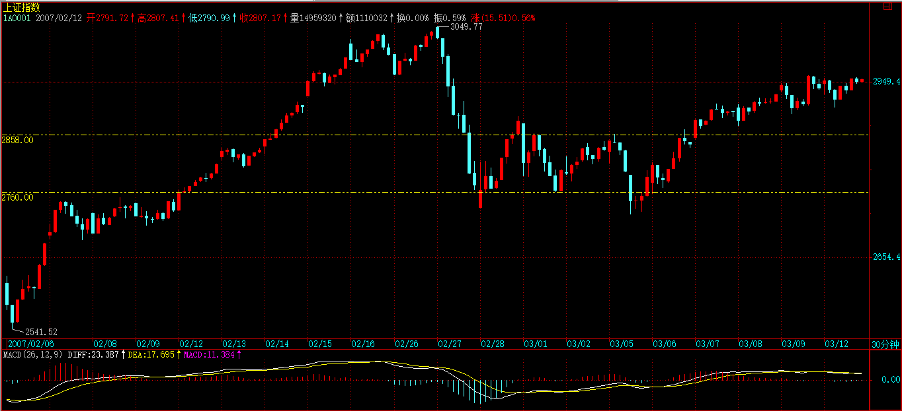
【韶山映山红】分析30分钟中枢，重新分解组合5分钟走势，所以这里还是用5分钟图更好看清楚。】
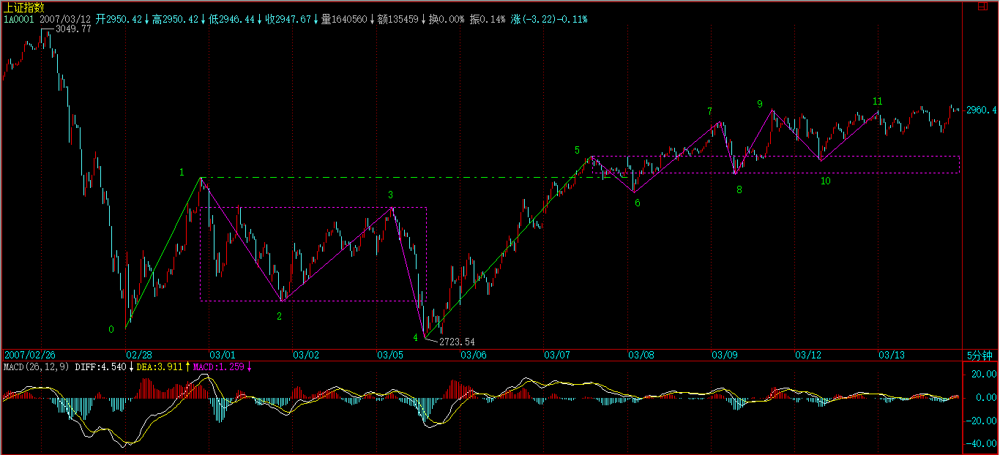
2760到2858这30分钟中枢，【韶山映山红】中枢1-2-3-4区间是［2760，2858］。这里首先面临的问题是，中枢的三个次级别走势是谁。可以是0-1-2-3的组合，也可以是1-2-3-4的组合。而且0-1-2-3的组合看上去更合理，因为3-4段看上去明显的级别要低一些。两种划分的中枢区间都是2-3，所以这里无法判断缠师眼里是哪个组合。我觉得，分析三买就意味着向上的走势，所以选择下上下的回踩中枢。至于级别不匹配的问题，是因为原文没有讲清楚“以时间换空间”和“以空间换时间”这两种不同的情况下，有没有级别的对应或者转换的关系问题。后面走势的7-8段也明显的级别低。当然，0-1-2-3作为中阴中枢也是可以的。】03.08 10:00的5分钟回抽确认了一个第三类买点，【韶山映山红】4-5离开，5-6返回，6比3高，6是三买点。这里的4-7离开可以看做是一个趋势，4-5之间是第一个中枢，包含在大中枢里面了，5-6的第二个回踩中枢就可以划分为三买。】然后其后就继续走出一个新的30分钟中枢，【韶山映山红】新的30分钟中枢5-6-7-8。】而03.08 10:00 5分钟回抽低点2871点比上一中枢的最高点2888点要低，【韶山映山红】6比1低。】而后来关于03.07 13:30开始的这个30分钟中枢出现延伸，【韶山映山红】5开始的这个30分钟中枢5-6-7-8延伸成5-6-7-8-9-10-11。】
这样，我们就可以对这个分解进行重新组合，给出一个更清晰的组合方法，把03.08 10:00的5分钟回抽组合到03.05 13:30开始的这段5分钟走势中，形成一个5分钟的上涨，【韶山映山红】把5-6回抽和4-5组合，以4-5-6-7为1-2-3-4中枢的离开段。向上的线段类盘整4-5-6-7实际上是一个次级别的趋势离开，和7-8-9-10构成趋势+盘整的组合，走势显示明显的规律性。】然后新的30分钟中枢就从03.09 10:30，【韶山映山红】新的30分钟中枢7-8-9-10。这一句明确中枢开始于7-8，而不在乎7-8看上去要比8-9和9-10的级别低。当然，要说三个次级别是8-9-10-11也未尝不可，只不过，走势类型分析的角度看，显然不是这样的。】这样的好处在于，这个中枢震荡的低点2892点比2888点高，【韶山映山红】8比1高。】如果其后的震荡不出现跌破2888的走势，【韶山映山红】其后的震荡不跌破1，就和中枢1-2-3-4的震荡区间没有重叠。】那么就是一个30分钟的上涨走势形成了。【韶山映山红】这样的组合形成了一个两中枢的上涨趋势。从这里也可以呼应前面的划分，下面的30分钟中枢是1-2-3-4而不是0-1-2-3。】
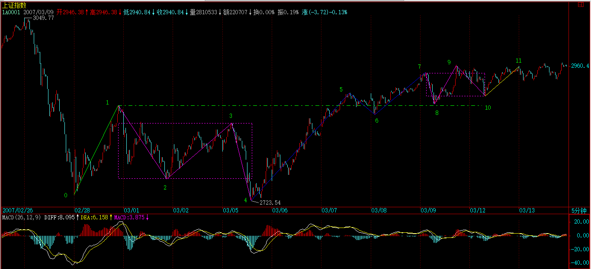
但在这个新的中枢被一个新的第三类买点有效突破前，【韶山映山红】这个新的中枢没有出现三买，就不能说已经确认趋势上涨。】依然存在震荡跌破2888点甚至最终确认中枢扩展。【韶山映山红】这样的组合，两个中枢的震荡区间没有重叠，也就没有中枢扩张了。但高位的中枢还没有完成，还有可能延伸震荡中跌破前中枢的震荡区间，造成中枢扩张。“甚至”这个词表明，后续的震荡跌破1也还是有可能没有中枢扩展，还需要“最终确认”。这句话再一次证明，两个已经三段确认的中枢，波动区间有重叠而扩张，不等于完成扩张，还需要相应的走势确认才是真的扩张升级。发出扩张信号是一回事，最终确认中枢扩展是另一回事，完全可以有波动区间重叠、发出扩张信号、却最终没有扩张的情况。】
【韶山映山红】说一个普适性的，应该能解决很多人的疑惑。当然，这只是我自己的理解和总结，缠师原文好像没有明确的这么说。 一个中枢的确认，其实是第三类买卖点。第三类买卖点结束盘整，也是这个意思。比如，一个上涨走势，中枢扩张有了三段了，看上去满足了要求，形成高级别中枢了。但是这个高级别中枢没有出三买，而是先出了三卖，这个中枢就不一定是走势类型的中枢了，经常只是一个中阴中枢，那么，中枢扩张也就没有得到最后的确认。】
但这样的重新组合，对看图就有了帮助。【韶山映山红】有了哪些帮助呢？首先，是避免做扩张升级的分析。因为一升级就要陷入盘整的混乱，而且还要形成更大级别的第三类买卖点去做确认，非常不利于当下。划分成趋势，就只需要盯着最后一个小中枢的演变了。】
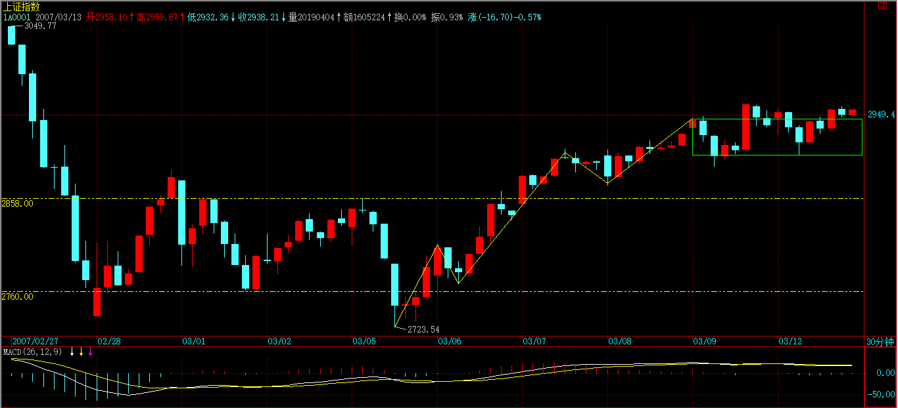
当然，站在纯中枢的角度，【韶山映山红】神燕根据这个“站在纯中枢的角度”，重新断句，演绎出来一个“纯中枢”的概念。类似，还有人演绎出“纯走势”的概念。】依然可以坚持让新中枢从03.07 13:30开始，【韶山映山红】站在纯中枢的角度，中枢是5-6-7-8。那么，这个纯中枢角度所说的中枢是谁？我觉得应该是中枢5-6-7-8，而不是中枢1-2-3-4。因为，从4开始的上涨，在5开始震荡，6-7对4-5的盘背，形成7-8的回踩，由此构成中枢，所以这个中枢就是5-6-7-8，之后都是这个中枢的延伸。这就是纯中枢的角度，也就是走势演化真正形成中枢的角度，而不是根据多义性做偏移的划分的角度。】这样对具体的操作也没有太大影响，但在判断上就没有重新组合的看起来方便了。【韶山映山红】两种组合划分，一种是两个中枢的上涨趋势，有一个当下明确的走势类型。另一种是中枢三买之后扩张，等待确认是否升级，当下还不能做判断。】
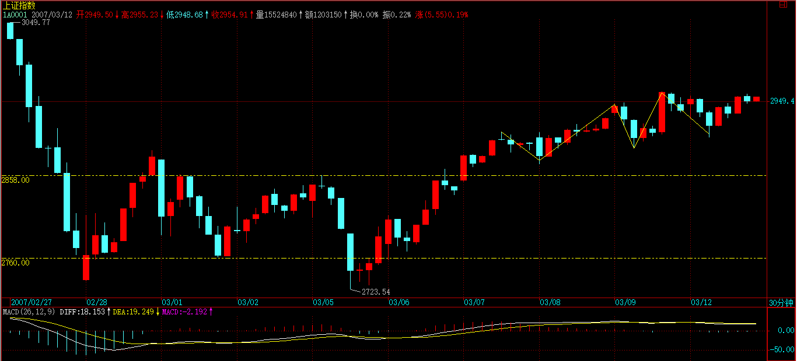
【韶山映山红】若禅精舍（陈秋明）：
】
注意，这种重新组合，不涉及任何预测性，【韶山映山红】这种运用需要避免的错误是：不要按照某种表象或者自己的愿望去预设立场。】有人可能要问，那么为什么不一开始就把03.08 10:00的5分钟回抽组合到03.05 13:30开始的这段5分钟走势中？【韶山映山红】为什么一开始不把5-6段回抽走势组合到4开始的这段5分钟走势中？也就是没有把离开段划分为一个4-7的趋势离开，而是把5-6剥离出来看做三买？】
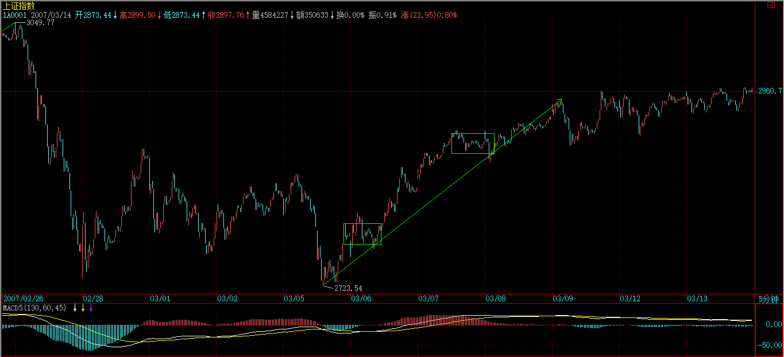
因为这种组合不利于操作，【韶山映山红】从操作的角度，只要有符合定义的第三类买卖点，就先划分出来。至于后面走势演变需要调整，那是后面的事。】站在这种组合下，03.08 10:00 5分钟回抽的第三类买点意义并没有被揭示，是仅仅被局限在一个小的5分钟走势范围内，【韶山映山红】5-6不单独划分出来，也就没有了这个三买。】按照这种组合，就会很恐慌地等待背驰，【韶山映山红】划分出三买，就可以介入。而划分成5分钟趋势离开，然后就要等着看这个5分钟的趋势背驰，而且之后是更大盘整还是转折，都不确定。】之所以这样，是因为对走势的理解不够深刻，看不到不同组合反映的意义。【韶山映山红】对走势的无序理解不够深刻，对多义性分析的理解不够深刻。】

而任何组合的反映都是有意义的，对这些组合意义的全面把握，就是一个工夫上的长进了。【韶山映山红】我一开始也喜欢画图，把走势分析画在K线图上。老枪说最好不要画，那样会把思维锁死的。现在想来，就是缠师这段话的意思。走势是无序的，各种组合都是合理的，越多的组合分析可能带来越多的清晰和机会。】
此外，组合的一个要点在于，尽量避繁就简，因为中枢扩展比较复杂，如果有组合使得不出现扩展，当然就采取该种组合更有意义。【韶山映山红】能不扩展，就不扩展。】
有人可能要问，那么中枢扩展的定义是否不适用？当然适用，中枢扩展的定义是在两个中枢都完全走出来的情况下定义的，而实际操作中，往往第二个中枢还没有走完，还在继续延伸中，【韶山映山红】也就是说，在小级别的角度看，中枢扩展属于追认。】所以，除非出现明确的、符合理论定义的破坏，就可以根据有利于判断、操作的原则，对走势进行当下的组合。【韶山映山红】既然第二个中枢还在继续延伸，不能做出当下的判断，“就可以根据有利于判断、操作的原则，对走势进行当下的组合，”当这个“继续延伸”“出现明确的、符合理论定义的破坏”的时候，又要根据实际的走势做新的分解组合。“最佳组合，是根据市场当下的走势随时变化的，而所有的变化，都符合理论要求且不会影响实际操作，是对实际操作起着更有力的帮助。”最后如果“出现明确的、符合理论定义的破坏”，就还是回到中枢扩展的分析轨道上来。】
但必须强调的是，当下采取什么组合，就要按该种组合的具体图形意义来判断、操作，【韶山映山红】组合的目的只是为了指导实际的操作。】例如，现在把03.09 10:30当成新30分钟中枢的起点，那么中枢的位置就变成2947到2905，这样后面第三类买点的位置就有了新的标准。【韶山映山红】中枢7-8-9-10的区间是[2905，2947]。后面第三类买点的新的标准就是回踩不进中枢7-8-9-10的这个区间，比中枢5-6-7-8的区间就要高一些了。】

当然，你依然可以还是按03.07 13:30开始30分钟中枢，这样，中枢的位置就是2911到2892，这样，第三类买点的可能位置就不同了。【韶山映山红】这种组合的中枢是5-6-7-8，区间是[2892，2911]。这种组合的第三类买点的标准就是回踩不进中枢5-6-7-8的这个区间，要低一些。】

【韶山映山红】这几段说的是多义性运用三：不同走势类型的组合。可以把走势重新组合，使得走势显示明显的规律性，从而使得走势看上去更加清晰，举例就是把纷乱复杂的扩张升级的盘整过程组合成清晰的上涨趋势。
这种运用的指导原则是：结合律。
这种运用的注意事项是：组合需要根据走势的发展随时变化，不断重新组合。
这种运用需要避免的错误是：不要按照某种表象去预设立场。
这种运用的要点是：尽量避繁就简。比如，因为中枢扩展比较复杂，如果有组合使得不出现扩展，当然就采取该种组合更有意义。】
【韶山映山红】若禅精舍（陈秋明）：
】
还有一种更重要的应用，就是在中枢的震荡中。
围绕中枢的震荡，不一定都是次级别的，例如，一个日线中枢，围绕他的震荡，完全可以是30分钟以下的任意级别，甚至是一个跳空缺口，例如有些股票，完全可以今天一字涨停，明天一字跌停，跳来跳去的。【韶山映山红】围绕中枢的震荡，可以是次级别，也可以是次级别以下级别的。这些震荡的级别可能很低，振幅却可能很大。】
一般这种走势，一般人看着就晕了。但如果明白走势连接的结合性，就知道，无论怎么跳，最终都要形成更大级别的，【韶山映山红】这些30分钟以下级别的震荡，不一定每一段都能走出相应的30分钟级别的走势来，但是根据“走势连接的结合性”都可以组合进30分钟级别的走势，最终都要形成更大级别走势。】只要不脱离这日线中枢，最后都至少会形成30分钟级别的走势。【韶山映山红】这些30分钟以下级别的震荡也可能直接脱离这个日线中枢，然后在别的价格区间展开新的走势，这时候就未必还能组合出合适的30分钟级别的走势。】
任何围绕日线级别的震荡，最终都必然可以按如下方式进行分解：
A30-1 + A30-2 + A30-3 + … + A30-m30 + a ，
a是未完成的30分钟走势类型，【韶山映山红】此时的a还是5分钟的走势，并且与A30-m30方向相反。】至少a依然围绕日线中枢继续震荡，那a一定最终会完成30分钟的走势类型。【韶山映山红】5分钟级别的走势a“依然围绕日线中枢继续震荡”的时候，就依然考虑会有一个30分钟的走势类型围绕中枢震荡。】显然，这里，m30<9，否则就会变成周的中枢了，这样整个的分解就要按日线来，而道理是一样的。【韶山映山红】其实，即使9段了，也还是需要第三类买卖点来确认。需要周线中枢的第三类买卖点来确认，所以整个的分解就要按日线来。实际的操作中，往往先出日线中枢的第三类买卖点，那就属于所谓的强三买了。】
【韶山映山红】这一段说的是多义性运用四：在中枢的震荡中，做中枢次级别走势的组合，组合出最后一个未完成的中枢次级别走势，供当下的分析使用。】
不过，更有实际意义的是，上面的a如果不再围绕日线震荡，例如，假设a是一个5分钟级别的，而其后一个5分钟级别的反抽也不回到中枢里，【韶山映山红】a离开中枢并且同级别反抽不回中枢的时候，才能说a“不再围绕日线震荡”。】按照日线中枢，这并不构成第三类买卖点，【韶山映山红】对日线中枢来说，是第三类买卖点的结构形态，但是级别不够。】但对于A30-m30，可能就构成30分钟的第三类买卖点。【韶山映山红】A30-m30是向下的走势，a就是向上的离开，这时候所说的A30-m30中枢是回踩中枢还是回升中枢？】
【韶山映山红】如果对日线中枢是第三类买卖点的走势形状，但是对A30-m30不是第三类买卖点呢？★★以后研究。】
【韶山映山红】这里说的是A30-m30不是第三类买卖点，而不是离开日线中枢的强三买。】
由于走势都是从未完成到完成，都是从小级别不断积累而来，因此，对于真正的日线第三类买卖点来说，这A30-m30的第三类买卖点，肯定在时间上要早出现，【韶山映山红】真正的日线三买要等这个a形成30分钟离开日线中枢，然后还要有一个30分钟返回。】对于A30-m30，这绝对安全，【韶山映山红】30分钟的三买至少有一段5分钟的上涨，一直到背驰。】但对日线却不一定，【韶山映山红】这样的幅度大、级别却不够的走势，要在相应的级别去分析才有确定性。】因为这A30-m30的第三类买卖点后完成的30分钟走势，可以用一个30分钟走势又重新回到日线中枢里继续中枢震荡。【韶山映山红】日线的三买才能保证有30分钟的一段上涨，30分钟的三买只能保证5分钟的一段上涨，然后可能是30分钟的转折。】但这个A30-m30的第三类买卖点依然有参与的价值，【韶山映山红】这里说的是日线级别的操作，在日线中枢的震荡中，遇到这种30分钟的三买，有参与的价值。】因为如果其后的30分钟出现趋势，【韶山映山红】如果走成趋势，这本身就收获很大。而且还形成了日线中枢的30分钟趋势离开。】最后如果真出现日线的第三类买卖点，往往就在30分钟的第二个中枢附近就形成了，【韶山映山红】尽量早的划分出一个第三类买卖点来，哪怕是次级别趋势离开，往往就是第二个回踩中枢。有的时候甚至是第一个回踩中枢。】根本回不到这A30-m30的第三类买卖点位置，【韶山映山红】因为是30分钟趋势离开日线中枢，然后形成日线三买的的返回只有两种：反趋势和盘整。反趋势还有可能回到A30-m30的三买位置，也只是可能，如果是盘整就更难回来了。】因此，这样的买卖点，即使不符合你的操作级别，例如，如果你是日线级别操作的，但一旦这样的A30-m30的第三类买卖出现，至少要引起你充分的重视，完全可以适量参与了，【韶山映山红】“这样的A30-m30的第三类买卖”是说a的5分钟离开日线中枢、5分钟返回不进日线中枢、同时还是30分钟A30-m30的三买。这样的走势可以建仓。】一旦其后出现趋势走势，就要严重注意了。【韶山映山红】一旦a的三买之后形成30分钟的趋势，就可以加仓。建仓、加仓都抢在日线中枢之前。】
【韶山映山红】这一段说的是多义性运用五：比次级别更低的级别离开中枢、返回不进中枢的提前抢跑，有人称之为强三买。】
【韶山映山红】若禅精舍（陈秋明）：
所谓强三买的出处。对公式表达不习惯的可以看这里的文字。一个日线中枢，有N个30分钟级别走势类型重叠，这里N一定小于9，而任何一个30分钟级别走势类型都必然有30分钟级别中枢，当下这个围绕日线中枢震荡的30分钟级别走势的中枢，如果出现第三买点，是可以适量操作的，显然，这个第三买点有两个位置可能出现，一个是在日线中枢区间内，一个是在日线中枢区间外，在外面的那个，就是所谓的强三买，但绝对不可以作为日线级别第三买点看待，否则后面的走势所要监控的级别就错了。
而如果一个向上的30分钟级别中枢，出现两个中枢，第二个中枢在日线中枢上方，这种情况经常被错误的认为是日线级别第三买点，而后面的走势经常是围绕第二个中枢震荡，或者下跌，原因在于没有搞清楚第三买点的走势逻辑条件。
】
不应该对走势进行任何的预测，但所有已走出来的走势，却可以根据级别与结合律等随意组合，无论任何组合，在该组合下，都必然符合本ID的理论，而任何最终的走势，都在所有组合中完全符合本ID的理论，这也是本ID理论的神奇之处，无论你怎么组合，都不会出现违反本ID理论的情况。
但能否找到最合适的组合以适应操作，【韶山映山红】组合出最合适的、未完成的当下走势。】以及根据不同的组合，对走势进行综合分析，【韶山映山红】不同组合结果的互相映证，或者互相参照。】这就和经验有关了。
这些最适合的分解，都是有相应答案的，关键是你能否看出来，而这根本不涉及任何的预测，只是对已有走势的分解，与对理论的把握与图形的熟悉度相关。而这些都是一些最基本的工夫，但必须在当下的走势中不断磨练才能真正掌握。
如果真能把握这些最基本的当下走势的最合理组合以及用不同组合进行综合分析，那就可以开始继续读初三了。【韶山映山红】初中的课程。初二：把握最基本的当下走势的最合理组合，以及用不同组合进行综合分析。】
【韶山映山红】若禅精舍（陈秋明）：
若禅精舍在多义性分解中，还有一种很有意思的现象，就是不同的分解结果，对后面走势的预期分类，有时候是相同的，有时候是不同的。对于相同的那种结果，无疑可以增加分类的确定度，而具有不同结果的分解，很多时候还可以相互印证出来哪种分类是不可能出现的，从而缩小走势分类的子集数量，增加分析的确定度。
】
【韶山映山红】总结这一课：不测而测的基础，完全分类是技术，组合是艺术，都需要不断修炼。】
今天很忙，没时间上来了，课程下贴出来，各位先研究。
先下，再见。
2007-3-13 09:03
(2007-03-14 08:58:13)
附录：
昨晚汉奸他爸大跌，汉奸很兴奋地要为他爸下半旗，所以就出现今天的走势。本来，大盘就需要震荡，而今天汉奸为他家拉的阴线，依然在围绕新中枢震荡的范围里，只要第三类买卖点不出现，这种震荡就将延续。现在的问题是，难道以后汉奸家的姨丈姑父们有什么烂事都要中国股市陪着他们一惊一乍？所以，一个以反汉奸为任务的传媒就是必须的。【韶山映山红】缠师就是这样把这段附录放在篇首的位置了，红色加粗字体。博文发布时间是开盘前(2007-03-14 08:58:13)，后补的附录时间是收盘后(2007-3-14 15:18)。】
忙，昨天收盘没发帖，今早补几句。目前大盘中线就是一个日、周中枢的问题，
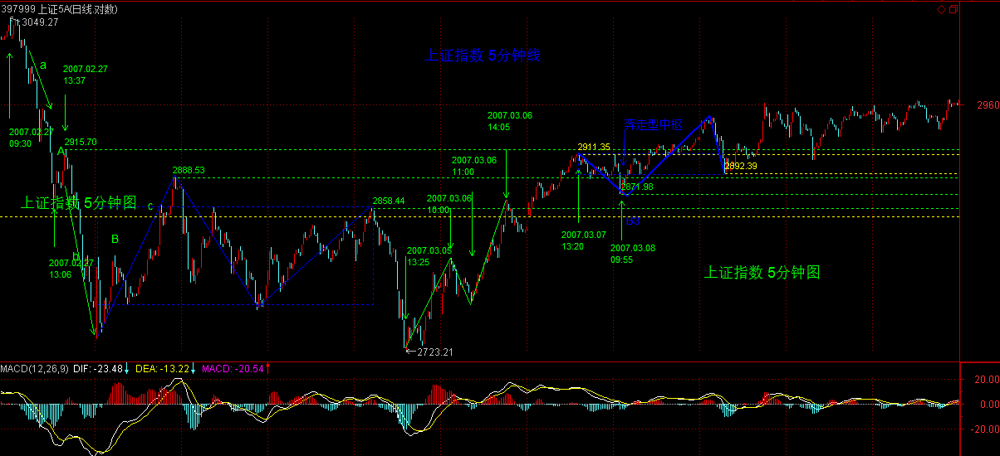
刀没两头利，如果这里是日中枢，现在就直接上去，那么就进入背驰段；
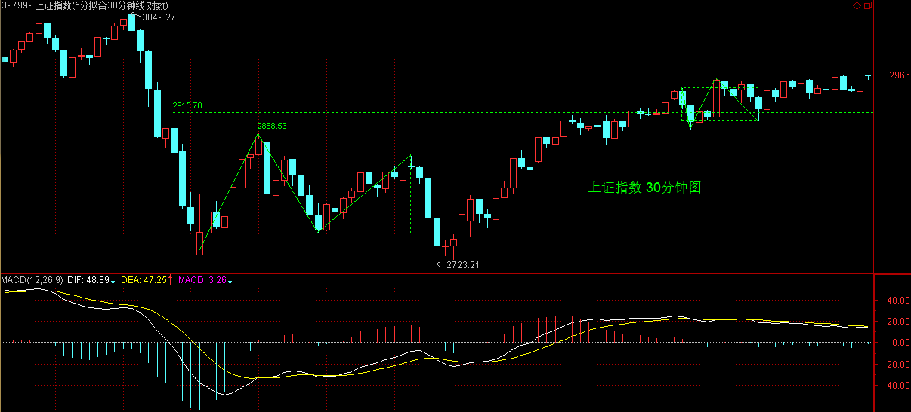
如果在这里继续震荡弄周中枢出来，其后可预期的上涨幅度就更可观一点。
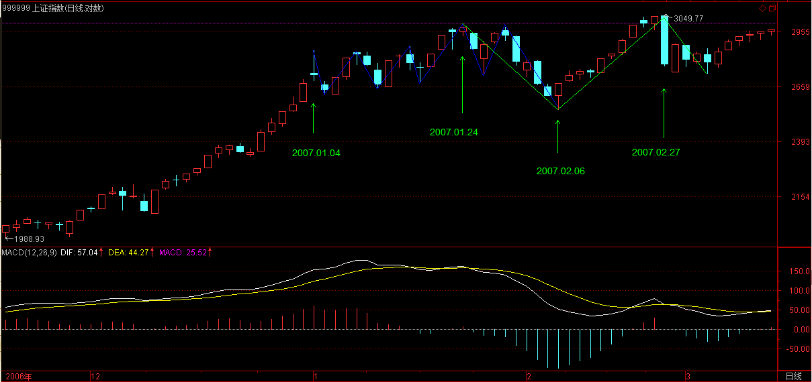
不过无论是什么中枢，大盘牛市第一波远没结束。
个股方面，从元旦开始一路出大型成分股、力挺二、三线股，春节前后更强调在低价三线股，目前，4元以下的非ST三线股基本没有了，前段说对5元上下的发动最残酷的进攻，很快也没进攻对象了。三线股的行情已经进入值得反思的阶段，除了真有题材与业绩支持的，已经进入短线的压力阶段，可以持有等卖点，但以没必要追高介入，特别那些业绩特差的。三线股上台阶后，其他股票就显示其价值。大型股票的启动还需要契机，资产注入等在前期强调的军工等板块中将继续蕴藏中线机会，农业、环保、科技之类的价值将逐步挖掘。
现在特别强调一个新板块，就是深圳中小板里的新上市小盘股票，一般流通都在2000万上下，总盘6000万上下，这类股票，即使在熊市中都不会有问题，牛市中就更有大的中线机会。
回顾所有中小板的股票，在上市阶段介入的，最终有哪个不是获利多多的，因此中线的资金，可以多关注，比现在还去追三线股的尾巴行情有意义得多，具体介入看图就可以。【韶山映山红】2005年6月至2006年6月的一年没有新股上市。然后2006年6月19日中工国际002051上市。难怪缠师特别关注这个票。★可以做个专题，以后研究。】
附录：
【韶山映山红】2007-3-14 15:18。】
昨晚汉奸他爸大跌，汉奸很兴奋地要为他爸下半旗，所以就出现今天的走势。
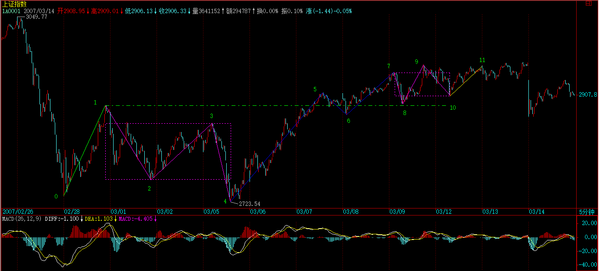
本来，大盘就需要震荡，而今天汉奸为他家拉的阴线，依然在围绕新中枢震荡的范围里，只要第三类买卖点不出现，这种震荡就将延续。
现在的问题是，难道以后汉奸家的姨丈姑父们有什么烂事都要中国股市陪着他们一惊一乍？所以，一个以反汉奸为任务的传媒就是必须的。
各股早上已经说了，现在的问题就在于，三线股的潜力有缩水，不可能把所有三线股都弄到比二线股还高，这样就乱套了。大盘现在最大的问题是，板块需要转换，一些有巨大中线潜力的二线股，将是主要目标。像今天早上说的那些，二线股还包括一些有高送配的股票，这在业绩公布时，都是常规性被操作的。
袖珍中小板的，值得中线关注。无非两种走势，一种是在开盘附近震荡出一个中枢后向上，一个是向下，向下的其实更有潜力，向下无非就两波，一旦出现日线背驰，就是中线大牛股。看看以前中小板中的走势就明白。向上突破的，可以在中枢震荡低点介入，来回弄短差直到出现第三类买点后就可以长抓一下，中小板一旦出现开盘后中枢的第三类买点，其后都有可观升幅。不明白的，把前面一些已经走出来的研究一下，对新股如何把握就有一个大概了。
基本面上，加息只有心理影响，一旦兑现就没问题了，比较大压力的是外汇投资公司中的一些问题，但依然在最多是周线中枢的承受范围内。
昨晚汉奸他爸大跌，汉奸很兴奋地要为他爸下半旗，所以就出现今天的走势。本来，大盘就需要震荡，而今天汉奸为他家拉的阴线，依然在围绕新中枢震荡的范围里，只要第三类买卖点不出现，这种震荡就将延续。
各股早上已经说了，现在的问题就在于，三线股的潜力有缩水，不可能把所有三线股都弄到比二线股还高，这样就乱套了。大盘现在最大的问题是，板块需要转换，一些有巨大中线潜力的二线股，将是主要目标。像今天早上说的那些，二线股还包括一些有高送配的股票，这在业绩公布时，都是常规性被操作的。
袖珍中小板的，值得中线关注。无非两种走势，一种是在开盘附近震荡出一个中枢后向上，一个是向下，向下的其实更有潜力，向下无非就两波，一旦出现日线背驰，就是中线大牛股。看看以前中小板中的走势就明白。向上突破的，可以在中枢震荡低点介入，来回弄短差直到出现第三类买点后就可以长抓一下，中小板一旦出现开盘后中枢的第三类买点，其后都有可观升幅。不明白的，把前面一些已经走出来的研究一下，对新股如何把握就有一个大概了。
2007-3-14 15:18
基本面上，加息只有心理影响，一旦兑现就没问题了，比较大压力的是外汇投资公司中的一些问题，但依然在最多是周线中枢的承受范围内。
2007-3-14 15:25
[匿名] 白玉兰 2007-03-14 15:25:36
000998是农业龙头，可是为啥如此蔫？
【韶山映山红】000998隆平高科。】
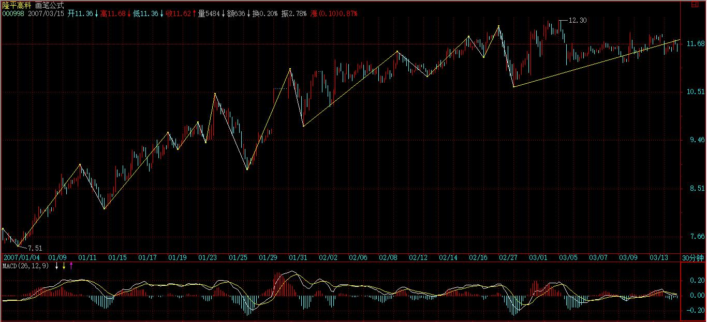
==
有一定业绩压力，不过问题不大。
938也有这个问题，所以不能太放肆。
【韶山映山红】000938紫光股份。】
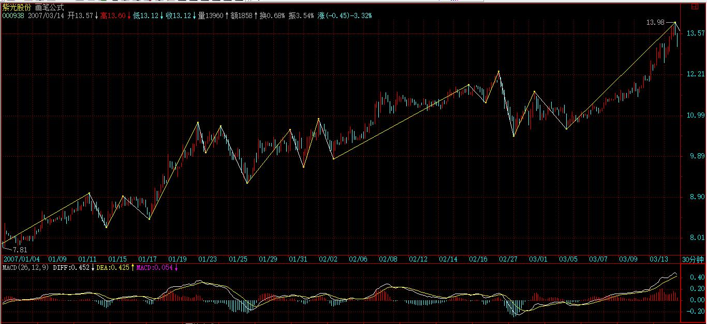
2007-3-14 15:30
[匿名] guess 2007-03-14 15:27:49
谢谢博主，今日买入了002120，买入后很平静，但收盘时突然冲高，不知道为何。
【韶山映山红】002120新海股份。】
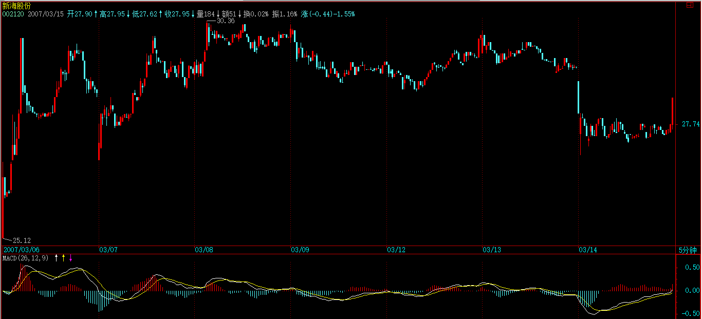
==
走势只要没有出现中枢意义上的变动，都没什么值得一惊一乍的。
2007-3-14 15:31
[匿名] 转帖一下 2007-03-14 15:32:16
你的论语片断，当然署名了，ok?
==
可以
2007-3-14 15:33
[匿名] 白玉兰 2007-03-14 15:27:13
我拿的两个山东人最近都表现不错，谢谢妹妹啊
==
就是大盘不是太配合，所以如果大盘走的特别恶劣，还是会调整的。
2007-3-14 15:35
[匿名] ED男猿 2007-03-14 15:32:18
另外请问老大，对于日线中枢，当其三买是以3个5分钟的走势类型（组成30F盘整）出现时，此时的买点确定有点困惑：
1：因为是盘整，又有分解定理，对于其三段5F走势的完成不能确定，
2：如果再找1F的背驰点，感觉在上一条都不能确定的情况下，很勉强。
请老大指点。
==
A、B、C三段，A、C之间可以比较盘整背驰，C内部又可以看小级别的背驰，两者一配合考察，就很简单了。
2007-3-14 15:39
[匿名] 风云 2007-03-14 15:34:42
LZ好,请问,新股的第一个中枢的第一段是否从第二段开始算,比如,新股上市后涨了几天然后下跌,其中枢应为下-上-下;上市后即下跌的,应为上-下-上,对吗
==
就把开盘到跳空缺口上涨，和有缺口的情况是一样的。【韶山映山红】新股开盘前的走势视为跳空缺口上涨。】
2007-3-14 15:42
[匿名] 小鸟 2007-03-14 15:21:02
这里的新股不包括次新股吧？
==
只要没被面首的都可以等待可被面首时介入。
2007-3-14 15:44
bird 2007-03-14 15:41:45
请问:二线,三线股是什么意思.跟成分股,大盘股,小盘股有什么关系???谢谢!
==
这其实没有太严格的区分，一般都以业绩、价位来分，几分钱、亏损的、价位在平均股价之下的，一般都是三线。在股市里长了，都会知道的。只是一个约定俗成的概念。
2007-3-14 15:49
匿名] 大盘 2007-03-14 15:41:05
博主好：
现在对3买的位置还是有点疑问，主要两个方面：
谢谢
==
只要次级别离开次级别回抽不回到中枢的都算。
但如果是那些连续延伸的上涨中第4、5个中枢，其第三买点出现中枢扩展就几乎是百分百的事情。【韶山映山红】第4、5个中枢的三买点之后，中枢扩展几乎是百分百。1，为什么扩展而不转折？2，第2、3个中枢更多转折吗？★★以后研究。】
第三买点后能否出现上涨趋势而不是更大级别中枢，如何判断，这才是关键，这在以后会说到。
2007-3-14 15:56
4点，对不起，有一个会议，先下，再见。
2007-3-14 15:57
(2007-03-15 08:55:33)
子夏曰：日知其所亡，月无忘其所能，可谓好学也已矣！
杨伯峻：子夏说：“每天知道所未知的，每月复习所已能的，可以说是好学了。”
钱穆：子夏说：“每天能知道所不知道的，每月能不忘了所已能的，可说是好学了。”
李泽厚：子夏说：“每天知道一些新知识，每月不忘记学过的旧知识，这可以叫做爱好学习了。”
详解：
这不是孔子的话，而是其弟子子夏的。孔子的思想，经一传再传，最后完全变味，而祸端就从其弟子开始。同称“可谓好学也已”，子夏的“日知其所亡，月无忘其所能”之于孔子的“君子，食无求饱，居无求安；敏於事而慎於言；就有，道而正焉”，就如秋风之蝉之于春阳之凤，一蛭之蚁之于九天之鹏。孔子的被曲解与败坏，就是从其弟子，从最简单的“好学”开始。
“日”，每日；“知”，孔子的“知”都以“智慧”解，而这里的“知”无法解释成“智慧”，否则语法上就成问题了，只能解释成“认识”；“亡”，通“无”，没的；“日知其所亡”，每日认识他所没的；“忘”，遗忘；“能”，会的；“月无忘其所能”，每月不遗忘他所会的。
当孔子的“智慧的当下鲜活呈现”变成子夏对“知识的日积月累”，中华文明的衰败就此埋下祸根，子夏之流绝对是中华文明的千古罪人。五千年文明历史，浩如烟海的典籍，如果没有“当下鲜活的智慧”，都是废物一堆。“知识”如果不产生能“当下鲜活”的智慧，知识不过是知识分子面首店里挂的招牌。
这子夏对孔子之“学”的曲解特别起劲，下面有一条同样为祸千古：
子夏曰：仕而优则学；学而优则仕。
杨伯峻：子夏说：“做官了，有余力便去学习；学习了，有余力便去做官。”
钱穆：子夏说：“仕者有余力宜从学。学者有余力宜从仕。”
李泽厚：子夏说：“官做好了去求学，学问好了去做官。”
详解：
中国有所谓“士大夫”，“大夫”者，仕也；未仕者，士也。知识分子阶层与官僚构成一个利益集团，长期把持中国的文化、政治，知识分子成为最变态、恶心的一群。
现在都在声讨所谓的官商勾结，特别是所谓的知识分子尤其起劲，这不过是因为二千多年的官学、仕士勾结被更直接、更利益的圈子给替代了，因此而生起无名醋意罢了。
在中国，从来都是知识越多越反动，知识越多越变态。知识，成了敲门砖，成了交易的筹码，却忘了，在智慧面前，知识不过是垃圾。一个知识的时代，不过是一个垃圾时代而已。
然而，站在某种角度，“仕而优则学；学而优则仕”确实是千古名言，但这里的“优”应该解释成其本义，“优倡”是也。
在这种解释下，一副中国二千来年的真实图景就呈现面前：仕、士、优一体。在这一体的自渎中，中国的历史被改朝换代了二千多年却依然一成不变。现在，越来越多的知识分子已经脱下最后的伪装，成为被官商同时轮奸的玩物。那些利益集团的代理人，那些汉奸走狗的传声筒，那些所谓的经济学家、这家那家，资本的狗腿子都不如，最多就是性奴一类。
一个戏子泛滥的时代、一个知识泛滥的时代、一个官商泛滥的时代、一个垃圾泛滥的时代，在这千古名言下等价了。
但更可怜的时代，就是那些以反知识为知识，反官商为观赏、反戏子为戏子的时代。反知识不过是用另一套把戏来把戏，而智慧无关知识与反知识。这一套套的把戏，难道还未看够演够？
（待续）
附录在这里容易看到：【韶山映山红】附录时间 2007-3-15 15:23】
马上要走，简单说两句。
昨天汉奸为他美国老爸降半旗，昨天为汉奸抛股票送花圈的，真是国际主义战士。
这里只关心走势，目前依然是那2905-2947的30分钟中枢震荡。明天两会要结束，汉奸是有以此发难的企图的，因此，相应的战斗还将延续。
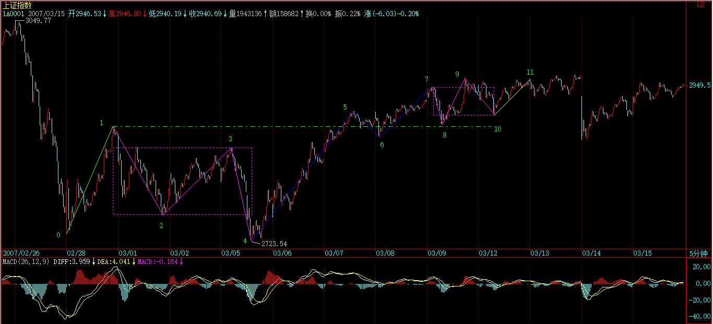
汉奸认了这么多干爸，实力还是有点的，否则早就突破3000点一飞冲天。在这里不断震荡，就是要消耗汉奸的实力，壮大自己。汉奸现在的地盘也就剩下大盘金融等少数几个了，今年来这轮二、三线股的独立牛市行情，基本与汉奸无关，像昨天说的小盘股，也基本没汉奸什么事。汉奸有本事就压着金融股送终吧，指数不涨，一样天天大牛市，等哪天，工行中行又几乎变成最便宜的股票，本ID倒要看看汉奸还怎么压着。
具体操作，大盘就看好震荡中围绕中枢的技术走势，具体方法课程里都有。另外，具体还要看好个股，毕竟现在指数的意义不太大，只要不是最恶劣的单边走势，个股机会依然。
对不起，先下，再见。
最近特忙，收盘就一大堆事等着，早上才有时间发帖子。
先下，再见。
2007-3-15 08:57
马上要走，简单说两句。昨天汉奸为他美国老爸降半旗，昨天为汉奸抛股票送花圈的，真是国际主义战士。这里只关心走势，目前依然是那2905-2947的30分钟中枢震荡。明天两会要结束，汉奸是有以此发难的企图的，因此，相应的战斗还将延续。
汉奸认了这么多干爸，实力还是有点的，否则早就突破3000点一飞冲天。在这里不断震荡，就是要消耗汉奸的实力，壮大自己。汉奸现在的地盘也就剩下大盘金融等少数几个了，今年来这轮三线股的独立牛市行情，基本与汉奸无关，像昨天说的小盘股，也基本没汉奸什么事。汉奸有本事就压着金融股送终吧，指数不涨，一样天天大牛市，等哪天，工行中行有几乎变成最便宜的股票，本ID倒要看看汉奸还怎么压着。
具体操作，大盘就看好震荡中围绕中枢的技术走势，具体方法课程里都有。另外，具体还要看好个股，毕竟现在指数的意义不太大，只要不是最恶劣的单边走势，个股机会依然。
对不起，先下，再见。
2007-3-15 15:23
本课目录
教你炒股票36：走势类型连接结合性的简单运用关于大盘个股说几句闲话《论语》详解：给所有曲解孔子的人（57）